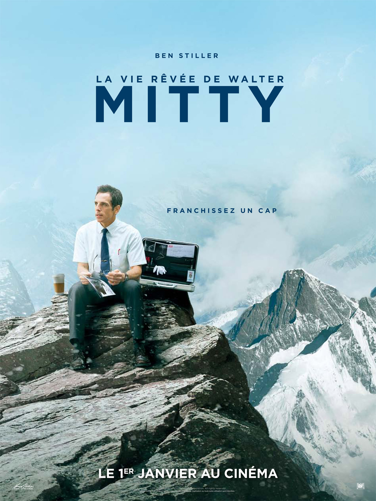

During my master degree, I launch a fablab for a mountain sport company. For a climber and maker like me, it could be paradise but... I was looking for more entrepreneurship and less friction. So I left for a coworking space in Grenoble to launch a new activity. Coding skills lacks me to test, test and retest ! So I want to learn to code to make stuffs and if I can make it usefull and beautifull that's will rock ! Actually more looking for a position in startup as a developper or UX designer. In my free time, I take somes photos !
|  |
The secret life of Walter MittyThe adventure begins for this white collar. A real quest to find a lost photographic negative or to find real life value ? For listeners, awesome BO ! Could be even great while coding... A bon entendeur ! |
12 AngrymensA teenage boy is accused of paricid. Twelwes mens are selected to take part to the judgement. Only one stand for his innoncence, until... Must see ! |
|
OSS 117, Le Caire nid d'espions"D'aucuns ont des aventures, je suis une aventure", "J'aime me beurrer la biscotte"... a film who generated lots of culte references ! |
This page has been coded during the FullStack program @LeWagon.